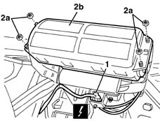

5580C22 AIR BAG MODULE - Passenger side - R.R.
- Path
- Procedures > 55 ELECTRICAL EQUIPMENT > 5580 SPECIAL ACCESSORIES > 5580C air bag system > 5580C22 AIR BAG MODULE - Passenger side - R.R.
- Kind
- repair procedure (removal / refitting; the operation number is the code)
- Applies to
- all engines; all production periods
- Interactive page
- https://sloeber94.github.io/elrnDB-lYpsln/en/#/2429453
Applies to: all engines; all production periods
Applies to: all engines; all production periods
 Removing
Removing
 Refitting
Refitting7040A26 steering column trim - r+r
5040C12 air conditioner housing - r r with facia disconnected
7040A74 TRIM under control panel - R.R.
7040A11 control panel lid - r + r
5560B10 analogue control panel - r+r
7040L28 tunnel switch panel - r r
7040L22 REAR TRIM on TUNNEL -R.R.
7040A18 glove compartment on facia - arrange
7040A30 Left instrument panel lower TRIM - R.R.
2125A30 lever/knob cover - r + r
7040A28 TRIM on gearbox control panel - R.R.
5505A25 SWITCH UNIT for OPTIONAL EQUIPMENT - R.R.
5040D18 air conditioner control unit - r r
5580C26 LOCK BARREL KEY/SWITCH for deactivating passenger 'AIR BAG - R.R.
7040A10 instrument facia trim - r+r
1. Disconnect the electrical connections for the Air Bag module.
 | Name | Connector |
|---|---|---|
1 | Air Bag in dashboard (passenger side) |
2. Undo nuts (2a) and remove the air bag module (2b).
Place the Air Bag module in the special cupboard, resting it on a free surface with the bag facing upwards.

Applies to: all engines; all production periods
Refitting
RemovingObserve the following precaution.
If a new module is being fitted, attach the labels. Detach the removable part of the adhesive label from the new module and put it in a specific file recording the vehicle details (model, registration data, chassis no.) and the serial no. of the old module. This file should be kept for future checks. A new label is supplied together with the module, to be stuck on top of the existing one. However, it should first be perforated to indicate the month and 14 years after the year when the module is fitted (e.g. 2017 will correspond to 2003).
Position the Air Bag module and secure with the nuts.
 | Fastening | Component | Ø | Value (daNm) |
|---|---|---|---|---|
- | Nut | PASSENGER AIR BAG MODULE | M6 | 0.8 |
Connect the electrical connection.
7040A10 instrument facia trim - r+r
5580C26 LOCK BARREL KEY/SWITCH for deactivating passenger 'AIR BAG - R.R.
5040D18 air conditioner control unit - r r
5505A25 SWITCH UNIT for OPTIONAL EQUIPMENT - R.R.
7040A28 TRIM on gearbox control panel - R.R.
2125A30 lever/knob cover - r + r
7040A30 Left instrument panel lower TRIM - R.R.
7040A18 glove compartment on facia - arrange
7040L22 REAR TRIM on TUNNEL -R.R.
7040L28 tunnel switch panel - r r
5560B10 analogue control panel - r+r
7040A11 control panel lid - r + r
7040A74 TRIM under control panel - R.R.
5040C12 air conditioner housing - r r with facia disconnected
7040A26 steering column trim - r+r
Connect the battery.
Check the operation of the system using the Examiner.
Topics linked from this page (18)
- 2125A30 lever/knob cover - r + r
- 5040C12 air conditioner housing - r r with facia disconnected
- 5040D18 air conditioner control unit - r r
- 5505A25 SWITCH UNIT for OPTIONAL EQUIPMENT - R.R.
- 5560B10 analogue control panel - r+r
- 5570T80 car radio unit - r+r
- 5580C26 LOCK BARREL KEY/SWITCH for deactivating passenger 'AIR BAG - R.R.
- 7040A10 instrument facia trim - r+r
- 7040A11 control panel lid - r + r
- 7040A18 glove compartment on facia - arrange
- 7040A26 steering column trim - r+r
- 7040A28 TRIM on gearbox control panel - R.R.
- 7040A30 Left instrument panel lower TRIM - R.R.
- 7040A74 TRIM under control panel - R.R.
- 7040L20 tunnel trim - r r
- 7040L22 REAR TRIM on TUNNEL -R.R.
- 7040L28 tunnel switch panel - r r
- Q11 Air Bag in dashboard (passenger side)